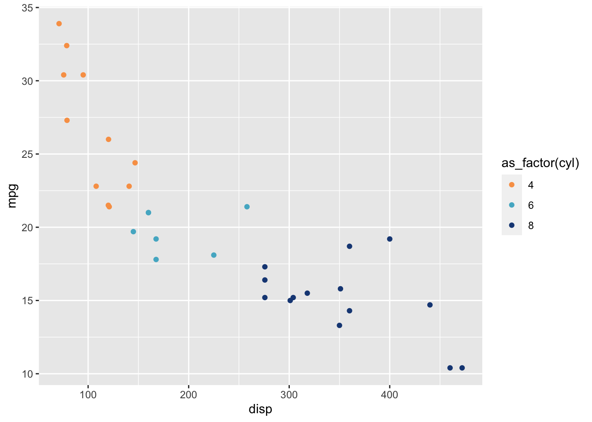
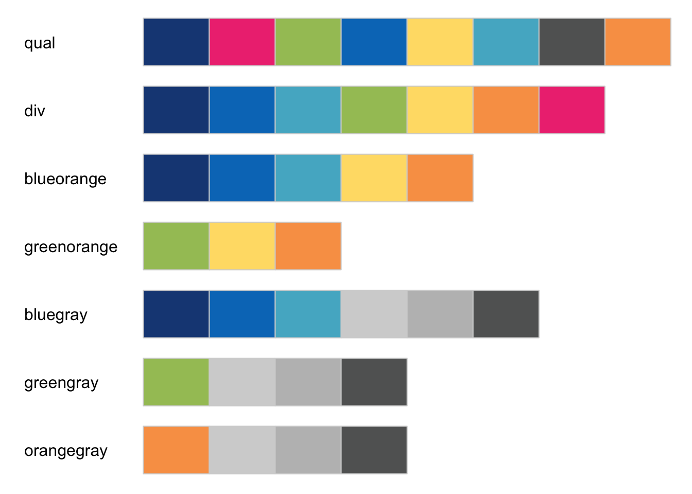

9 Visualization Standards
9.1 IDEA branding
When producing a visualization for presentation or publication, use the Brand Guideline standards established by the Marketing team. Many of these guidelines, particularly colors, have already been incorporated into an R package, ideacolors.
9.1.1 The ideacolors package
The ideacolors package is used in conjunction with ggplot2 to produce graphs and visualizations consistent with the primary and secondary brand color schemes. For more information, consult the ideacolors documentation.
To install the package, use the following code:
# install.packages("devtools")
devtools::install_github("idea-analytics/ideacolors")
9.1.1.1 ideacolors themes and scales
Consider the following chart using the mtcars data set, where we create a scatter plot of engine displacement by fuel efficiency measured in miles per gallon where we’ve set the color aesthetic (or channel) to the number of cylinders a car’s engine has:
p <- ggplot(mtcars, aes(x=disp, y=mpg)) +
geom_point(aes(color=as_factor(cyl)))
p
You can quickly apply IDEA brand compliant colors by using for the scale_color_idea() function:
library(ideacolors)
p +
scale_color_idea() Super easy!. We can also easily change the the palatte and even reverse it:
Super easy!. We can also easily change the the palatte and even reverse it:
p +
scale_color_idea(palette = "blueorange", reverse = TRUE)
Available palette’s are given in theidea_palettes variable and can be seen here
colorspace::swatchplot(idea_palettes)
### Color BlindnessNote that IDEA’s brand colors are not completley safe for color blindness. Here’s each palatte with adjustments to check for the predominant types of color blindness in the population:
colorspace::swatchplot(idea_palettes, cvd = c("desaturate", 'deutan', "protan", "tritan"))
9.1.2 Race/Ethnicity Colors
When creating visuals of Race/Ethnicity we want to be consistent with the colors chosen for each race/ethnicity. Additionally, we want to ensure that the colors are not offensive to any group. Below are the colors that were used for all of the Diversity, Equity, and Inclusion (DEI) work that has been completed in the last couple of months of 2022.
- American Indian/Alaskan Native: idea_colors$melon (#F9A054)
- Asian: idea_colors$cyan (#53B4CC)
- Black: idea_colors$magenta (#EE3A80)
- Hispanic: idea_colors$blue (#0079C1)
- Multi-racial: idea_colors$lime (#A4C364)
- Other: idea_colors$yellow (#FFDE75)
- Pacific Islander: idea_colors$darkblue (#1A4789)
- White: idea_colors$coolgray (#626363)
Suppose your data frame, df_reading_levels, contains information about Academy students’ grade-level reading equivalents GradeLevelEquivalent with race and ethnicity in the RaceEthnicity column. To create a visualization of reading levels using the custom palette, you’ll need to code the palette in three places:
- as a vector of colors, outside of the plotting function
- as an aesthetic, inside the initial plotting call
- as a value, inside a manual scale function
Let’s define the palette as a vector. You may need to adjust the names of the race or ethnicity to match the factors in your data frame.
# step 1
race_ethnicity_legend <- c("American Indian" = idea_colors$melon,
"Asian" = idea_colors$cyan,
"Black" = idea_colors$magenta,
"Hispanic" = idea_colors$blue,
"Other" = idea_colors$yellow,
"Pacific Islander" = idea_colors$darkblue,
"Two or more races" = idea_colors$lime,
"White" = idea_colors$coolgray)Then, inside a geom_*() layer, assign the appropriate column RaceEthnicity to the appropriate aesthetic aes(). (Depending on your visualization, the aesthetic might be fill, shape, etc.).
# step 2
ggplot(df_reading_levels) +
geom_boxplot(aes(x = GradeLevelEquivalent,
color = RaceEthnicity))One additional call is needed to force ggplot() to use the palette you specified earlier.
# step 2
ggplot(df_reading_levels) +
geom_boxplot(aes(x = GradeLevelEquivalent,
color = RaceEthnicity)) +
# other layers go here... +
# step 3
scale_color_manual(values = race_ethnicity_legend,
drop = FALSE) +
labs(color = "Race / Ethnicity")The scale_color_manual() call will accept the vector of colors specified earlier in values, and drop = FALSE forces the legend to show all possible values and colors of race_ethnicity_legend, regardless if they appear in the RaceEthnicity column. (If the aesthetic if fill, then use scale_fill_manual(values = race_ethnicity_legend, drop = FALSE), and so on).
The default legend title is to use the column name. However, the labs() call relabels the legend title for the color aesthetic to “Race / Ethnicity”. (If the aesthetic is fill, then use labs(fill = "Race / Ethnicity"), and so on).
9.1.3 Grade Level colors
If your visualization or reporting requires grouping across grade levels, using the IDEA polo color for that grade level is a familiar palette for IDEA schools. For more information about uniforms, refer to the parent guide.
The following are the current polo colors for each grade level:
| Grade Level | Color |
|---|---|
| PK-5th, 8th | Blue |
| 6th, 10th | Red |
| 7th, 11th | Orange |
| 9th | Green |
| 12th | Black |
Clearly, if all grade levels are present on one plot and cannot be individually labeled (say, a scatterplot), then using one color for multiple grade levels is not advised. However, if color coding a document or table where colors can be repeated, then this palette can provide visual cues to contextualize the report.
9.1.4 Typography
The primary brand font is Proxima Nova; the secondary fonts are Arial or Helvetica. Before using the code, ensure that these fonts have already been installed. Then, to add these fonts to a visualization, use the following code:
# install.packages("showtext")
library(showtext)
showtext_auto()
font_add("proxima",
regular = "proximanova-regular.ttf",
bold = "proximanova-extrabold.ttf",
italic = "proximanova-regularit.ttf",
bolditalic = "proximanova-extraboldit.ttf")This code will apply the font consistently to all text in any visualization created for that R session.